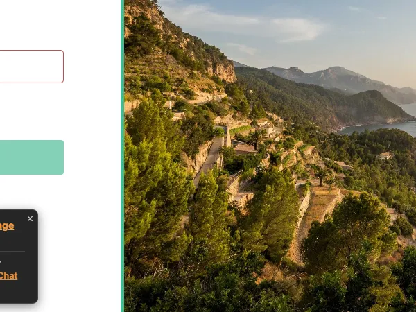

Anonymous Indian Chat Room
Your safe space for nickname-based private conversations.
Welcome to the premier destination for **Anonymous Indian Chat**. In today's digital age, privacy is paramount. Many users seek a platform where they can express themselves freely without the burden of revealing their true identity. IndiaDostiChat was built with this core philosophy in mind, offering a sophisticated and secure **Anonymous India chat room** for everyone.
Privacy as a Core Priority
In an era where personal data is often treated as a commodity, finding a space that respects your boundaries is essential. Our **anonymous Indian chat** is built on the principle that you shouldn't have to sacrifice your privacy to make new friends. By removing the need for registration, we eliminate the risk of data leaks or unwanted tracking. You can talk freely about your interests, your day, or your aspirations, knowing that your digital footprint is minimized.
The Evolution of Anonymous Chat in India
The concept of anonymous communication has evolved significantly over the years. What started as simple bulletin boards has transformed into high-speed, real-time communities like IndiaDostiChat. For the Indian audience, **anonymous India chat rooms** have become a vital outlet for self-expression. In a society that is often traditional, the ability to discuss ideas and meet people outside of one's immediate social circle provides a unique sense of liberation. Our platform is proud to be part of this evolution, utilizing modern technology to keep the spirit of open conversation alive.
Safety Tips for Anonymous Chatting
While we provide a secure platform, we always encourage our users to practice safe online habits. Even in an **anonymous Indian chat room**, it is important to remember that you are interacting with strangers. We recommend never sharing your real name, address, phone number, or financial information in a public channel. Our moderators are always present to help, but your first line of defense is your own discretion. By following these simple guidelines, you can enjoy the best of **desi friendship chat** without any unnecessary risks.
Nickname-Based Chat Experience
Forget the long registration forms and verification emails. Here, you can join the conversation instantly using just a nickname. This **nickname-based chat** ensures that you remain in control of your identity. You choose how you want to be known, and you can change your identity whenever you feel like it. It's the ultimate freedom in online communication. Many of our long-term users have built legendary reputations within the community using only their nicknames, proving that you don't need a real-world identity to be a respected member of a group.
Hindi and English Conversations
India is a diverse land with many languages, but Hindi and English serve as our primary connecting threads. Our **anonymous India chat room** is a hub for both Hindi and English speakers. Whether you want to practice your language skills or simply feel more comfortable in your native tongue, you'll find plenty of like-minded individuals here. The mix of cultures and languages makes for a vibrant and educational experience. It is not uncommon to see a single conversation fluidly transitioning between Hindi and English, a phenomenon known as Hinglish that perfectly captures the modern Indian spirit.
Safe and Secure IRC-Based Platform
Security is at the heart of IndiaDostiChat. Our platform is built on proven IRC technology, which has been the backbone of online chat for decades. This **safe IRC-based chat** ensures that your connection is stable and your conversations are protected. We employ advanced moderation tools and a dedicated team to keep the environment free from spam and harassment. Unlike newer, unproven platforms, our IRC-based system is resilient against many common digital threats, ensuring that your **anonymous Indian chat** remains uninterrupted.
No Email Required. Just Choose a Nickname and Chat
No email required. Just choose a username or nickname and start chatting.
IndiaDostiChat keeps entry simple. You do not need to create an account, verify an email, or share a phone number. Enter a nickname, join the chat, and start talking with Indian friends online.

No App Needed - Mobile Browser Optimized
One of the biggest advantages of IndiaDostiChat is that it is entirely browser-based. There is **no app needed** to join our community. Whether you are on a desktop, tablet, or smartphone, you can access our **mobile browser chat** with ease. This means you don't have to worry about storage space or privacy concerns associated with installing third-party apps on your device. Just open your browser, enter our URL, and you are in the room. This low-barrier entry is why so many people prefer us for their daily **anonymous India chat room** fix.
Desi Friendship Chat: Connecting Hearts
At its core, IndiaDostiChat is about building connections. Our **desi friendship chat** has helped thousands of people find friends, mentors, and support. The anonymity often helps people open up more quickly, leading to deeper and more meaningful friendships than one might find on traditional social networks. In our rooms, people are judged by their character and their contributions to the conversation, not by their profile picture or job title. This creates a level playing field where real friendships can flourish.
Join the IndiaDostiChat Community Today
We invite you to experience the best **anonymous Indian chat room** available today. Join IndiaDostiChat and become part of a global community of Indians and desi enthusiasts. Share your thoughts, play games like Monster Hunt and Trivia, and enjoy the freedom of anonymous communication. Whether you are looking for a place to vent, to laugh, or to learn, our community is waiting for you with open arms (and nicknames).
Frequently Asked Questions
Yes, we do not require any personal information. You only need a nickname to join.
No, IndiaDostiChat is 100% free for all users.
Yes, our chat is fully optimized for all mobile browsers. No app download is required.